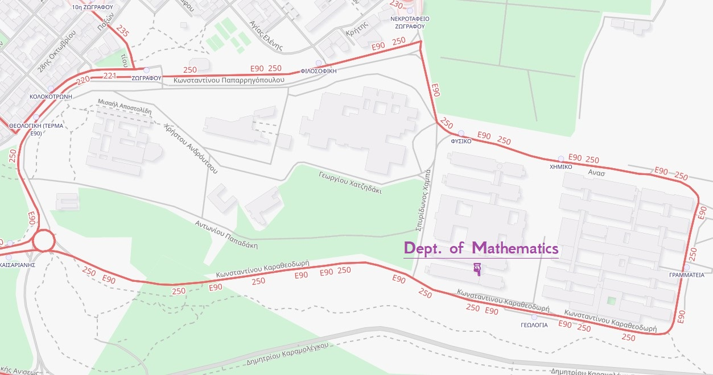
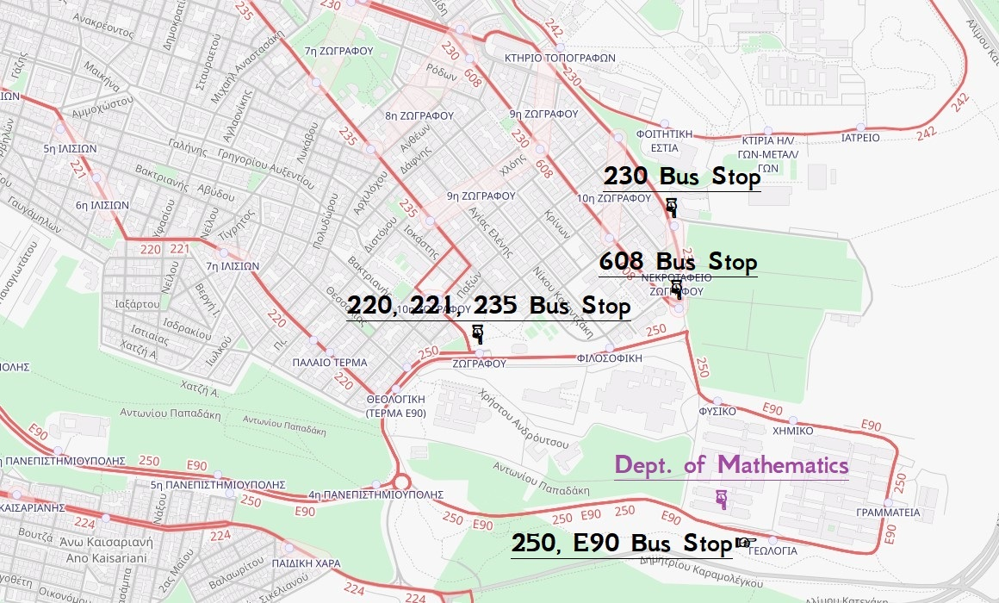
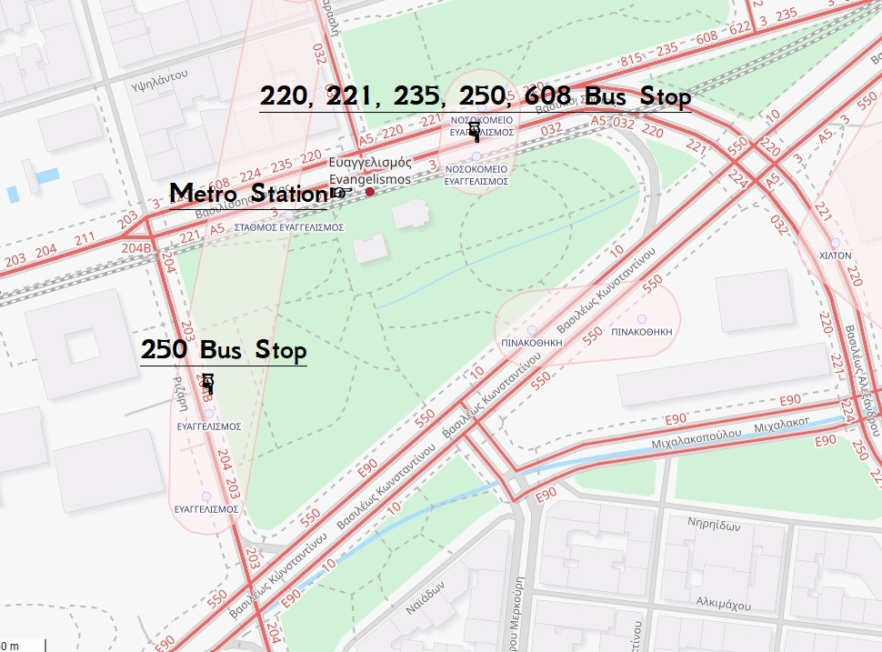
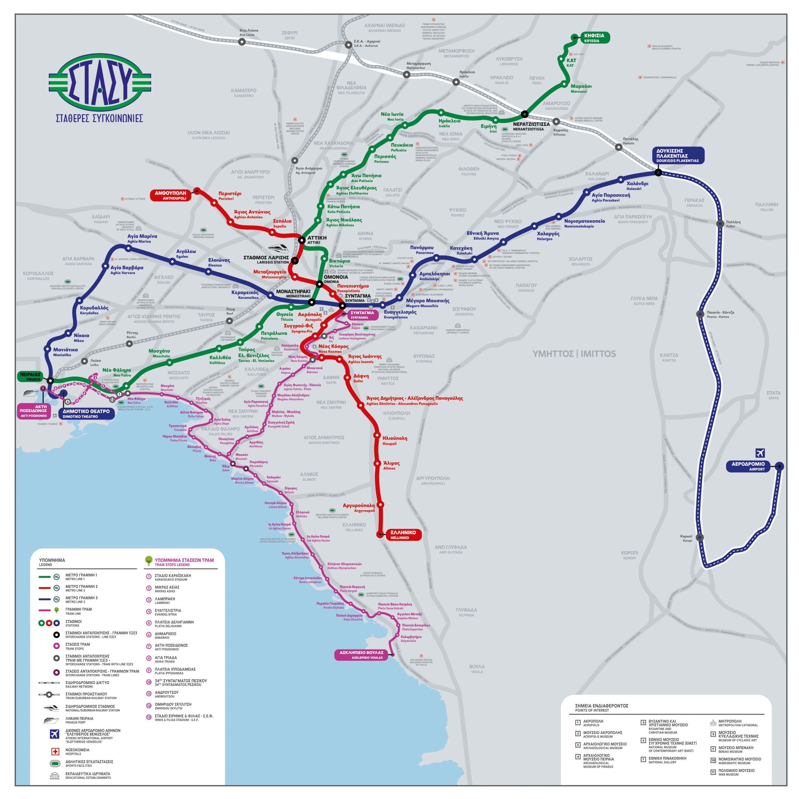

Partial Differential Equations Conference
Conference at National and Kapodestrian University of Athens
25-27 of June, 2025
Location

Map of Panepistimioupolis, Dept. of Mathematics (maps.uoa.gr/)
{kind=link}
Accommodation
wwww
Public transport
Athens has three metro lines (1: Green, 2: Red, 3: Blue) plus a tram line (4: Purple). Note that none of them reach Panepistimioupolis Zografou. The nearest station is Evangelismos station (line 3, blue line), from which you can take a bus to Panepistimioupolis.

Bus lines near Panepistimioupolis (maps.uoa.gr/)
{kind=link}
Bus lines near Panepistimioupolis, Zografou: We list them by how they should be prefered:
- Line 250: Starts from Evangelismos station, goes through the campus, returns to Evangelismos.
- Line 608: Starts from Galatsi, passes from Evangelismos station, stops at Zografou cemetery. Then goes back to Galatsi following the reverse route.
- Line 235: Starts from Academia, passes from Evangelismos station, stops at Zografou. Then goes back to Academia following the reverse route.
- Line 221: Starts from Academia, passes from Evangelismos station, stops at Zografou. Then goes back to Academia following the reverse route.
- Line 220: Starts from Ano Ilisia and passes from Zografou. Then it passes from Evangelismos station, from Academia and then returns to Evangelismos station and to Ano Ilisia.
- Line E90: Starts from Pireus, passes from Sigrou-Fix (line 2, red line), goes through the campus. Then goes back to Pireus following the reverse route.
- Line 230: Starts from Acropolis and goes to Zografou. Then goes back Acropolis following the reverse route.
Important notice: Please check for schedule changes beforehand!
Official webpage for Athens transport: ΟΑΣΑ (Athens Urban Transport Organisation)

Bus lines near Evangelismos station (maps.uoa.gr/)
{kind=link}

Metro lines in Athens (Urban Rail Transport: www.stasy.gr/)
{kind=link}